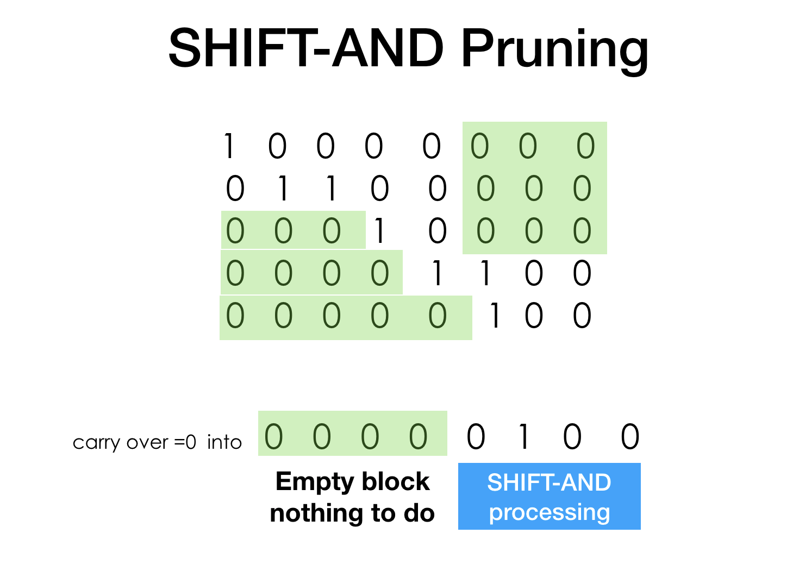
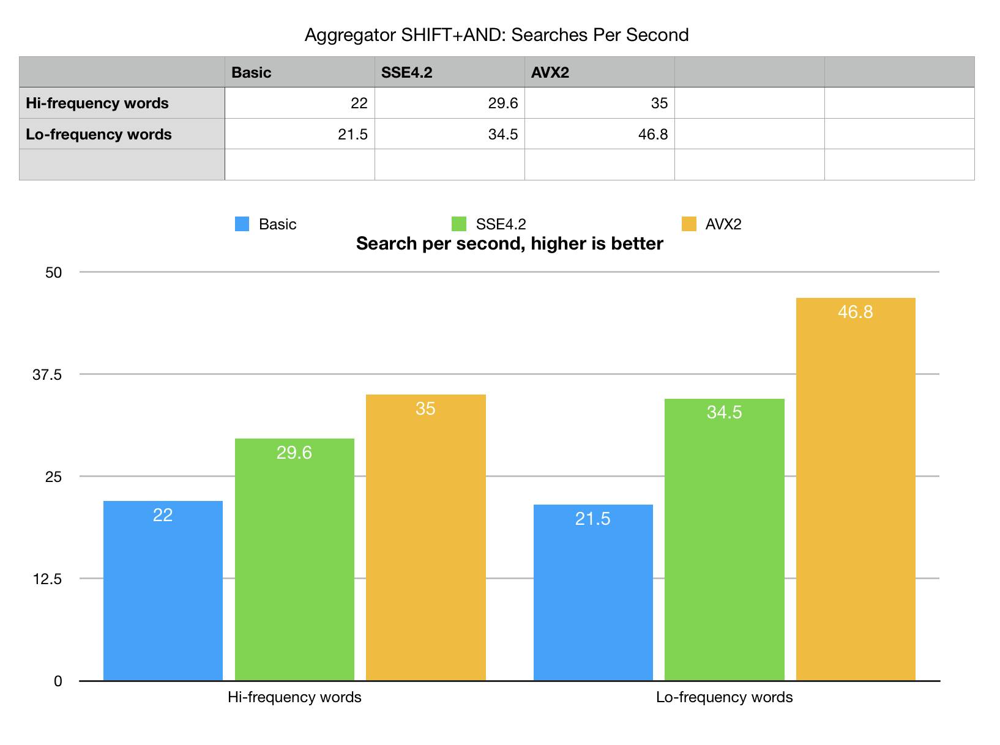
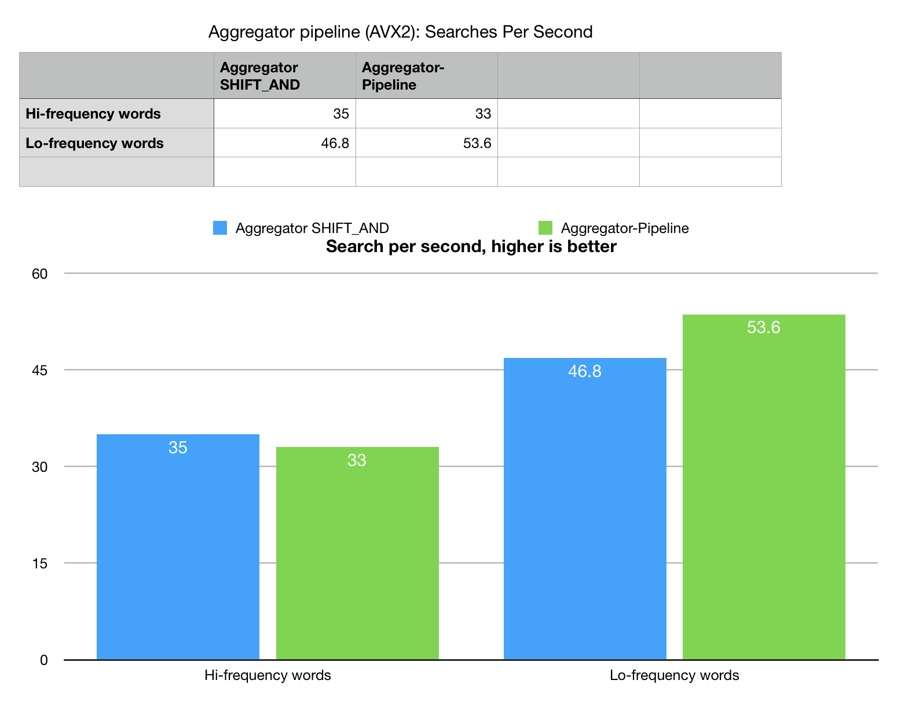

SHIHT-AND substring search with fingerprint bit-vectors
Anatoliy Kuznetsov. Andrei Shkeda. Oct 2018. anatoliy_kuznetsov@yahoo.com
UPDATED: Nov. 2018.
Introduction
Substring search is an important basic components for larger algorithms. There are number of classic approaches to this problem. One which we discuss in this tech.note is an exact substring search, variation of Bitap, based on SHIFT-AND operations. This algorithm can be used for substring pattern matching, or word based fingerprint vectors to search for patterns in text. Based on bitwise operations this algorithm can be efficiently optimized for SIMD command sets, we used SSE4.2 and AVX2 for this experiment.
As an experimental basis we choose DNA sequences. DNA is a 4-letter alphabet string: ’A’, ’T’, ‘G’, ‘C’. We used human chromosome 1 which is 250M base pairs (letters) long and presents approximately 8% of human genome.
SHIFT-AND substring search
 First phase of the algorithm is to build fingerprint bit-vectors,
each representing positions in the nucleotide sequence. 4 bit-vectors (A,T,G and C) give us equivalent
representation (you actually need only two, but lets put this opportunity aside for a moment).
First phase of the algorithm is to build fingerprint bit-vectors,
each representing positions in the nucleotide sequence. 4 bit-vectors (A,T,G and C) give us equivalent
representation (you actually need only two, but lets put this opportunity aside for a moment).
Once we have 4 fingerprint 1-gram vectors, an exact search can be expressed as a series of bit shifts and logical ANDs. If we are searching for a sting ‘TGC’ we take a T-fingerprint, shift it right and AND with what is next - fingerprint ‘G’. As a result we would get a positions of all TGs in our text. Such positions needs to be corrected by the length of searched word. Repeating the operation for the whole searched substring would give us ends of all possible occurrences in the text (that is why the word length correction is needed).
It should be noted that fingerpting SHIFT-AND algorithm can be easily adapted for various fingerprints used in natural language systems, chemical (sub)structure search, search for signal patterns, security intrusion pattern scanners and other IR and inference work.
The basic SHIFT-AND algorithm is here. This is a fragment from our sample program.
void Find(const string& word, vector<unsigned>& res)
{
if (word.empty())
return;
bm::bvector<> bv(GetVector(word[0])); // step 1: copy first vector
// run series of shifts + logical ANDs
for (size_t i = 1; i < word.size(); ++i)
{
bv.shift_right(); // SHIFT the accumulator bit-vector
// get and AND the next fingerprint
const bm::bvector<>& bv_mask = GetVector(word[i]);
bv &= bv_mask;
auto any = bv.any();
if (!any)
break;
}
// translate results from bvector of word ends to result
unsigned ws = unsigned(word.size()) - 1;
TranslateResults(bv, ws, res);
};
Algorithm complexity and optimization notes
The proposed algorithm, when used on plain fingerprint bit-vectors would have terrible big-O complexity. N*M or arguably even worse, because we have to SHIFT-AND full sequence length fingerprints multiple times. Attentive reader probably noticed, that fingerprints use twice less memory per letter then the original sequence, so it has a certain upfront advantage over plain string search.
Another consideration is possibility for brute force optimization using SIMD instructions. Bitwise operations are very fast and SIMD processing makes it even more efficient.
Another technique ("The Technique") used in search systems is search space pruning. The nature of logical AND is a reduction so every next SHIFT-AND iteration makes our search space smaller, it means we can and should avoid unnecessary shifting and AND-ing.
BitMagic bit-vectors are segmented into blocks and lists of blocks. When the whole block becomes zero it gets dropped and the BitMagic algorithms are smart enough to skip empty blocks.
Another optimization which we used here is fast aggregator, which is a collection of cache-blocking, fused logical operation algorithms. http://bitmagic.io/aggregator.html Previously we described, how aggregator can be used for efficient SNP name search. http://bitmagic.io/succinct-snp-search.html
The most recent version of BitMagic library 3.15.0 adds fused SHIFT-right-AND to a
collection of aggregation utilities specifically for fingerprint and pattern detection searches.
Comparing to bm::bvector<> Aggregator also uses more advanced search space pruning,
based on sub-block digests, which also makes search faster.
As a comparison and correctness check we also implemented a variant of 2-way string search algorithm. It is a naive algorithm, but it outperforms a even more naive shifted “strncmp”. Being in the same N*M category it works as a reference point on performance.
Benchmarking did not taken into account time to build fingerprint vectors, which is (for now) is assumed to be amortized over multiple search runs.
Benchmarks
Performance testing was done with Intel(R) Xeon(R) W-2140B CPU @ 3.20GHz using iMacPro with Clang compiler.
 A few comments here. Even the basic fingerprint search with some search space pruning
outperforms the naive string search. Aggregator, uses cache blocking techniques and
digest based search space pruning making it faster.
The peculiarity of this particular search is that there are only 4 fingerprints
(4-letter alphabet) and SHIFT-AND iterations rerad the same data over and over again
so fingerprint slices, used by aggregator easily fit into the fastest L1d CPU cache,
algorithm becomes less memory bound, comparing to “horizontal SHIFT-AND” which has to
load the same fingerprints over and over again.
This makes a huge difference even without any SIMD, in pure portable C++.
A few comments here. Even the basic fingerprint search with some search space pruning
outperforms the naive string search. Aggregator, uses cache blocking techniques and
digest based search space pruning making it faster.
The peculiarity of this particular search is that there are only 4 fingerprints
(4-letter alphabet) and SHIFT-AND iterations rerad the same data over and over again
so fingerprint slices, used by aggregator easily fit into the fastest L1d CPU cache,
algorithm becomes less memory bound, comparing to “horizontal SHIFT-AND” which has to
load the same fingerprints over and over again.
This makes a huge difference even without any SIMD, in pure portable C++.
SIMD versions as we can see cannot show its full performance until we solved memory bottleneck.
AVX units a lot faster than memory interfaces. bvector<>
SHIFT-AND benchmark cannot unfold its potential. SIMD versions are just barely faster than the
plain C++. Aggregator is substantially faster, because it configures all SHIFT-ANDs as a fused algorithm
and performs the whole word search using "vertical" pass, eliminated repeated memory load.
Basic-SSE4.2-AVX2 variants of aggregator algorithm scale a lot better.
Bit-vectors indeed love SIMD, but they love bandwidth even more, the full potential of bit-vector SIMD can only be unfolded with cache blocking techniques.
Search space pruning
 While simple the idea of search space pruning deserves explanation. When we are doing series of SHIFTs and ANDs the density of our bit-stream drops. What do you do if 0 carry over gets shifted into a known "00000000000" area. You do nothing! The result of AND is predefined (1 AND 0 == 0), expensive shifting can skip and restart somewhere later. More we progress through the search, faster it goes.
This idea of skipping exists in many successfull substring search algorithms, like industry benchmark Boyer-Moore.
 What is the efficiency of pruning for different situations? Our example generates two separate sets of benchmark k-mers (words), one if hi-frequent words, another low-frequent words. "Frequency" here is a measure of selectivity or how often the word can be found in the search set. Low frequent words are found just a few times, and offer a better chance of search space pruning and elimination.
Our best so far algorithm (aggregator) actually shows fairly good speed-up on low-frequency set with AVX2. There is an explanation to that aside from doing less because of pruning. Profiling showed that the difference accounts for lower cost of memory management of result sets. H-search, produces thousands or tens of thousands of hits on the length of 250M base pairs of chr.1. Current version of aggreator does not do on the fly compression or transformation of bit-vector into a list of unpacked ints. This adds some costs and yes, the highly selective search runs faster (as it should).
Operation pipelining
 Since cache blocking offers a significant performance boost we created a very experimental algorithm, which runs search for the whole benchmark set of words (25) as a pipeline of separate aggregators. It searches the whole string for multiple substrings in one pass which guarantees cache re-use. Again we create a reference, pure string 2-way algorithm and it gives 3x better performance, which reflects how much this is memory bandwidth problem.
The situation with experimental aggregator pipelining is not as great as we expected. Pipeline shows increase of performance on low-frequency word set (highly selective search) and decrease of performance on hi-frequency set. It took a while to understand this phenomenon. Experiments with various compilers and environments (GCC, MSVC, Clang) showed inconsistencies, which lead us to conclusion, that this counter-optimization is attributed to the costs of runtime memory management. Keeping all the result sets all at once and allocating all the blocks of memory takes its toll and may be a subject for a follow up optimizations. For now operations pipelining remains an experimental feature, which need more work to be fully useful.
SIMD micro-optimization notes
The portable algorithm for array shifting by 1 is simple.
inline
bool bit_block_shift_r1(bm::word_t* block,
bm::word_t* empty_acc, bm::word_t co_flag)
{
bm::word_t acc = 0;
for (unsigned i = 0; i < bm::set_block_size; ++i)
{
bm::word_t w = block[i];
bm::word_t co_flag1 = w >> 31;
acc |= w = (w << 1u) | co_flag;
block[i] = w;
co_flag = co_flag1;
}
*empty_acc = acc;
return co_flag;
}
SSE4.2
inline
bool sse42_shift_r1(__m128i* block, unsigned* empty_acc, unsigned co1)
{
__m128i* block_end =
( __m128i*)((bm::word_t*)(block) + bm::set_block_size);
__m128i m1COshft, m2COshft;
__m128i mAcc = _mm_set1_epi32(0);
unsigned co2;
for (;block < block_end; block += 2)
{
__m128i m1A = _mm_load_si128(block);
__m128i m2A = _mm_load_si128(block+1);
__m128i m1CO = _mm_srli_epi32(m1A, 31);
__m128i m2CO = _mm_srli_epi32(m2A, 31);
co2 = _mm_extract_epi32(m1CO, 3);
m1A = _mm_slli_epi32(m1A, 1); // (block[i] << 1u)
m2A = _mm_slli_epi32(m2A, 1);
m1COshft = _mm_slli_si128 (m1CO, 4); // byte shift left by 1 int32
m1COshft = _mm_insert_epi32 (m1COshft, co1, 0);
co1 = co2;
co2 = _mm_extract_epi32(m2CO, 3);
m2COshft = _mm_slli_si128 (m2CO, 4);
m2COshft = _mm_insert_epi32 (m2COshft, co1, 0);
m1A = _mm_or_si128(m1A, m1COshft); // block[i] |= co_flag
m2A = _mm_or_si128(m2A, m2COshft);
_mm_store_si128(block, m1A);
_mm_store_si128(block+1, m2A);
mAcc = _mm_or_si128(mAcc, m1A);
mAcc = _mm_or_si128(mAcc, m2A);
co1 = co2;
}
*empty_acc = !_mm_testz_si128(mAcc, mAcc);
return co1;
}
AVX2
inline
bool avx2_shift_r1(__m256i* block, bm::word_t* empty_acc, unsigned co1)
{
const __m256i* block_end =
(const __m256i*)((bm::word_t*)(block) + bm::set_block_size);
__m256i m1COshft, m2COshft;
__m256i mAcc = _mm256_set1_epi32(0);
__m256i mCOidx = _mm256_set_epi32(6, 5, 4, 3, 2, 1, 0, 0);
unsigned co2;
for (;block < block_end; block+=2)
{
__m256i m1A = _mm256_load_si256(block);
__m256i m2A = _mm256_load_si256(block+1);
__m256i m1CO = _mm256_srli_epi32(m1A, 31);
__m256i m2CO = _mm256_srli_epi32(m2A, 31);
co2 = _mm256_extract_epi32(m1CO, 7);
m1A = _mm256_slli_epi32(m1A, 1); // (block[i] << 1u)
m2A = _mm256_slli_epi32(m2A, 1);
// shift CO flags using +1 permute indexes, add CO to v[0]
m1COshft = _mm256_permutevar8x32_epi32(m1CO, mCOidx);
m1COshft = _mm256_insert_epi32(m1COshft, co1, 0); // v[0] = co_flag
co1 = co2;
co2 = _mm256_extract_epi32(m2CO, 7);
m2COshft = _mm256_permutevar8x32_epi32(m2CO, mCOidx);
m2COshft = _mm256_insert_epi32(m2COshft, co1, 0);
m1A = _mm256_or_si256(m1A, m1COshft); // block[i] |= co_flag
m2A = _mm256_or_si256(m2A, m2COshft);
_mm256_store_si256(block, m1A);
_mm256_store_si256(block+1, m2A);
mAcc = _mm256_or_si256(mAcc, m1A);
mAcc = _mm256_or_si256(mAcc, m2A);
co1 = co2;
} // for
*empty_acc = !_mm256_testz_si256(mAcc, mAcc);
return co1;
}
SSE4.2 and AVX2 deserves a note. The usual AVX2 complication is that it does not offer
commands to cross 128 barrier. (One single 256-bit register is fused of two 128-bit lanes).
Thus the implemented logic of doing shift and carry-over now relies on
_mm256_extract_epi32 - _mm256_permutevar8x32_epi32 and
_mm256_insert_epi32.
This is a complex permutation which can probably be optimized better.
( if somebody has a faster variant of this code, please e-mail to anatoliy.kuznetsov AT gmail.com ).
This just a few lines of code, which make real difference in performance, help is much appretiated.
What about thread parallelization?
The question you may have is why don’t we take the initial, simple SHIFT-AND algorithm and just run it many times on many cores. Aside from the mission of BitMagic library to provide SIMD enabled implementations, there is a catch.
Horizontal, memory bound algorithms running many threads would surely fight for the same resource: memory bandwidth. Even in high end server grade systems, memory bandwidth is limited. Scalability of such early parallelization would look more like paralyzation. 4-6 threads may be enough to reach the limits of memory controllers. Many core solutions are even more interesting, as they use NUMA configurations (AMD Threadripper / EPIC products).
If we plan to scale well, on systems with 32-64 available execution cores in NUMA setup, we should do bandwidth planning and optimizations before making it run parallel. SIMD programming as cryptic as it may look to some, also offers fantastic opportunity to do accelerated processing, before going MT and such an option may radically change the thread-task layout when you eventually go parallel.
2-bit DNA representation
People who work with DNA sequences a lot would notice, that very often DNAs are NOT stored using 8-bit representation. Aside from possibilities to further compress DNA sequences using dictionaries or Markov predictive models, 2-bit representation used a lot due to its simplicity and efficiency. 2-bit representation like ‘A’ - 00, ’T’ - 01, ‘G’-10, ‘C’-11 should be enough to keep all the original DNA string.
Are fingerprints wasteful?
Yes and no. It is possible (not implemented) to build fingerprints on the fly as a pipeline stage of the aggregator out of 2-bit representation with logical operations (AND, OR and Invert). If there is an interest, let us know (anatoliy.kuznetsov AT gmail.com), we will come with an example to illustrate this case as well or just convince yourself it is possible and if done right with SIMD plus cache blocking, would be almost as efficient as pre-building it (dangerous assumption detected, needs proof).
Use of fingerprints is larger than just search of DNA substrings, you can use the described technique to search for any fingerprinted objects, for example presence of whole phrases in text, if fingerprints are constructed on canonicalized words or word combinations (NLP use case).
N-gram fingerprints
For the DNA sequences it should be possible to build N-Gram (or k-mer) fingerprints. 3-grams would have 3 pre-calculated bit-vectors which may result in faster (or just different) pattern matching algorithms. This requires arbitrary shifts (not implemented in the current version).
Possible improvements
- Faster fingerprint construction. Loading of BitMagic vectors can and probably be improved to use fast fingerprints.
- Compute kernel improvements for AVX2 and maybe AVX-512
- Better implementation of pipeline aggregation
- GP-GPU. Probably the ultimate solution, allows to harness lots of parallel compute power
UPDATE: Tech.note on fast fingerprinting
Fast DNA index construction. MT, SSE4.2, AVX2 discussed.